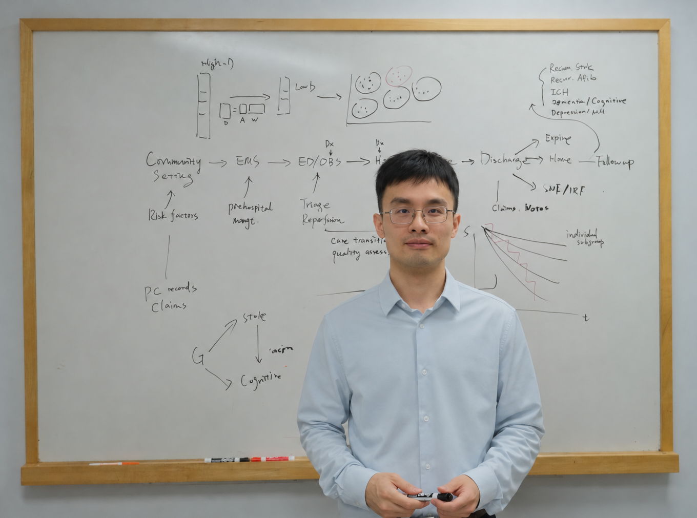

Harvard T.H. Chan School of Public Health
677 Huntington Avenue
Boston, MA 02115
I'm very fortunate to have worked with many amazing peers, mentors, and collaborators. I welcome opportunities to brainstorm research ideas with real-world biomedical and clinical impact and collaborate across disciplines. Feel free to get in touch to learn more about our research or explore potential synergies.
I am a Ph.D. candidate in Biostatistics at Harvard University developing statistical and machine learning methods to generate actionable evidence for improving vascular brain health and healthcare delivery.
My research focuses on integrating real-world clinical, biomedical, and social data to reveal disease mechanisms, inform potential therapeutic targets, support individualized care, and identify gaps in care quality across cerebrovascular and neurodegenerative conditions.
My work also spans stroke epidemiology and health services research, including characterizing heterogeneity in stroke care quality and outcomes and informing strategies to improve stroke systems of care.
Before joining Harvard Biostatistics, I was a Data Scientist at Massachusetts General Hospital, where I initiated and implemented healthcare utilization forecast and service reporting pipelines to directly support clinical decision-making and quality improvement.
I'm grateful for a team of mentors who support my research initiatives and career development, including Drs. Xihong Lin and Rui Duan co-advising at Harvard Biostatistics, Drs. Christopher D. Anderson and Luca Pinello at Mass General Brigham, Drs. Kori Zachrison and Lee Schwamm at Yale School of Medicine, and many other researchers I have been collaborating with and learning from.
My current research is supported by the American Heart Association (AHA) through the following grants:
AHA 26PRE1563536
Generative AI-Augmented Proteomics for Predicting and Linking Cerebrovascular Diseases and Cognitive Decline
AHA 26GWTGDRASp1611353
Integrative Learning of Clinical-Social Presentation Profiles to Reveal Novel Stroke Subgroups and Predict Outcomes
Awards
- 2026Paul Dudley White International Scholar AwardAmerican Heart AssociationHighest-scoring abstract from the United States at the International Stroke Conference.
- 2026Vascular Cognitive Impairment AwardAmerican Stroke AssociationHighest-scoring abstract in the Brain Health category at the International Stroke Conference.
- 2026Get With The Guidelines Data Research AwardAmerican Heart Association
- 2026Joint Statistical Meetings Student Paper Award Honorable MentionAmerican Statistical Association, Biopharmaceutical Section
- 2026Predoctoral FellowshipAmerican Heart Association
- 2025Genomic and Precision Medicine Travel GrantAmerican Heart Association
- 2025Student and Early Career Travel ScholarshipAmerican Statistical Association
- 2025Section on Statistics Student Travel AwardAmerican Association for the Advancement of Science
Service
- 2026 -Member, Communications CommitteeAmerican Heart Association Council on Epidemiology and Prevention (EPI)
News
- Sep 2026
Our study on patient representation learning using multi-institutional EHR was accepted by NeurIPS 2026.
- Aug 2026
Our study on learning stroke subtypes from clinical notes was presented at the Joint Statistical Meetings and received a Student Paper Award Honorable Mention from the ASA Biopharmaceutical Section.
- Jul 2026
I was appointed as a member of the American Heart Association Council on Epidemiology and Prevention (EPI) Communications Committee, with my term beginning in July 2026. Check committee page
- Jul 2026
Our study on incorporating hospital performance into prehospital stroke routing was published in Prehospital Emergency Care. Read article
- Jul 2026
My AHA Predoctoral Fellowship began, supporting research on generative AI-augmented proteomics, cerebrovascular diseases, and cognitive decline.
- Apr 2026
Our study on skilled nursing facility network capacity and hospital length of stay was published in JAMA Network Open. Read article
- Feb 2026
Our study on proteomics across cerebrovascular and cognitive outcomes received the Vascular Cognitive Impairment Award at the International Stroke Conference. Read news · Watch award video
- Feb 2026
Our study on proteomics across cerebrovascular and cognitive outcomes received the Paul Dudley White International Scholar Award as the highest-scoring submission from the United States at the International Stroke Conference. Check award page